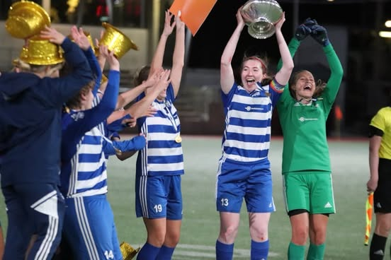

Welcome
Hi! I'm Irina
I am an Engineering Consultant based in Stockholm, with a deep passion for Design and Photography.
About Me
These days, I serve as a Scrum Master for a project within the Automotive Industry, leading and guiding a team of engineers towards achieving key goals.
When I was little, I was completely obsessed with Lego and Meccano – they weren’t just toys, they were the gateway to my curiosity about how things are made. This led me down the path of Mechanical Engineering, but after a few years, I realized that my true passion was in shaping the ideas – not just the mechanics – which led me to a Master's in Product Development and Innovation. Along the way, I’ve learned to understand people’s needs and translate them into real-world solutions. Outside of work, you’ll find me on the football field, capturing moments with my camera, in photo-shop or daydreaming about the next creative project.
Gallery
Enjoy my creative outlet
Contact
Feel free to reach out via email or connect with me on LinkedIn!
- Email: irina.dempsey@example.com